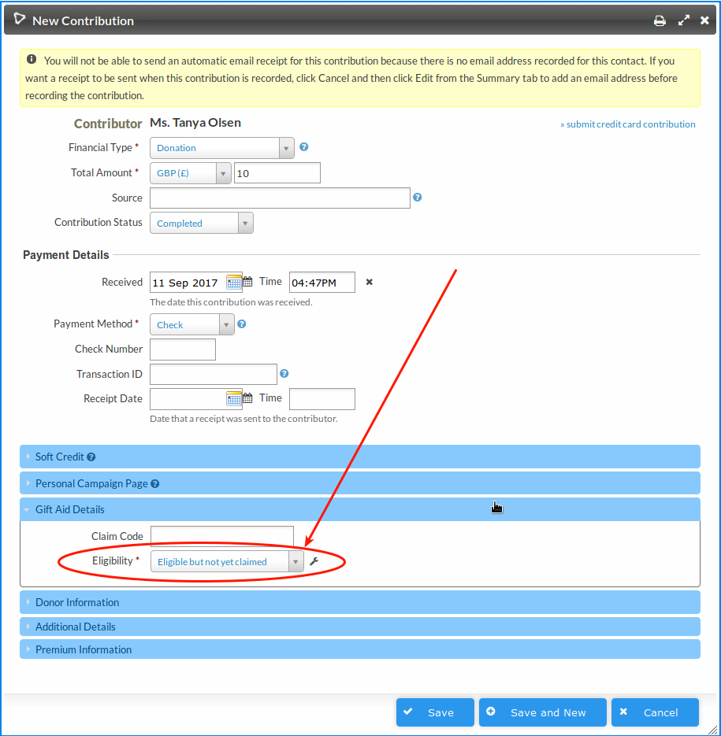
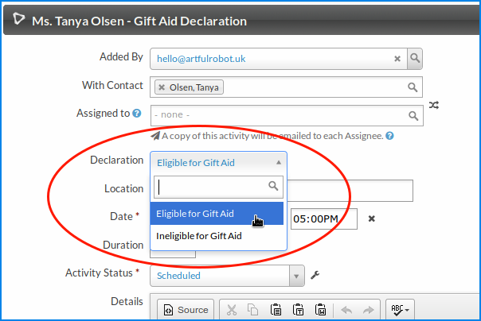
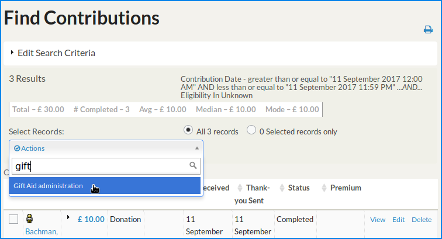
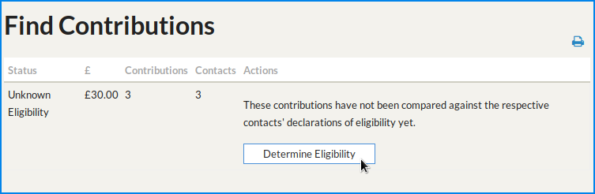
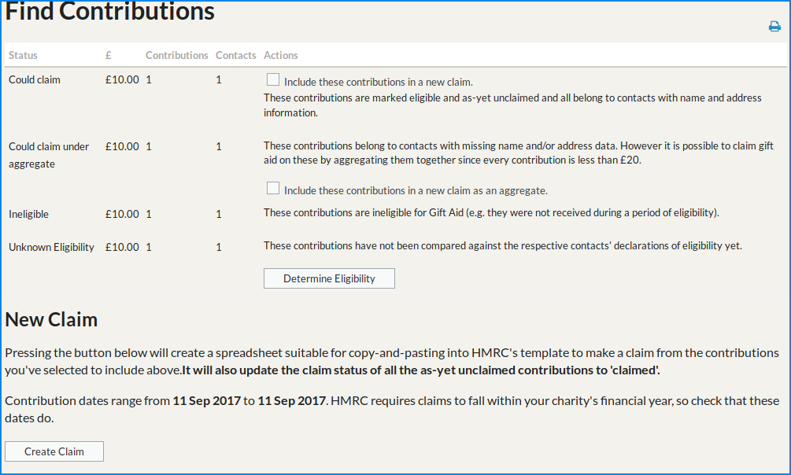
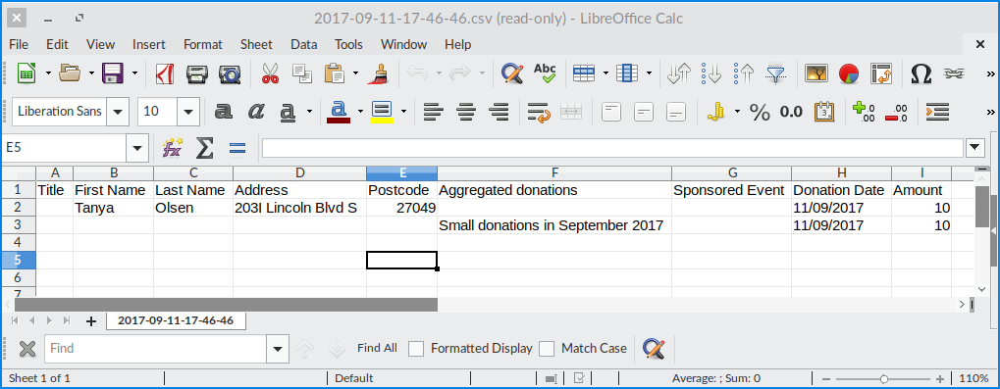

Usage
Check you know your stuff. (and a disclaimer!)
You need to be up-to-date on what you can and cannot claim Gift Aid on. There may be a time when things change and this extension is no fit for use (please submit an Issue if so!) and you need to know this rather than rely on the tool!
Typically you need to record a declaration and a payment needs to have been for the purposes of donating to your registered charity. Some donations may come through that you know are not eligible (e.g. someone has collected money from elsewhere and gives it to you as a one off donation using your online donation form); it's up to you to ensure Gift Aid is not claimed on this.
Typical workflow
- Collect donations and declarations.
- Do a claim for a batch of donations.
Record Donations
You collect donations and they are entered as Contributions in CiviCRM. This may be an online process, manual data entry, a contributions import or an API-driven integration -- anything is valid.
Note that there's a new Gift Aid fieldset on contributions with a drop-down containing:
- Unknown
- NOT eligible for Gift Aid
- Eligible but not yet claimed
- Eligible and has been claimed
As seen here: 
This defaults to Unknown, and that's fine for now - keep reading.
Record Declarations
You also collect Gift Aid declarations from people. People may tell you "this one donation is eligible" or they may tell you "treat all of my donations from now on as eligible". They may also tell you "My donations are not/no longer eligible for Gift Aid".
You can store Gift Aid Declarations (either positive or negative) using the Gift Aid Declaration activity. The date of the activity serves as the date the declaration is valid from, so you could back-date it. If you do back date it, it's probably a good idea to record what you did in the Details section so that someone looking at the record in future understands what you did.

Note that for third party integrations there's a helper method to record a declaration activity.
Identify eligibility of the 'unknowns' based on the declaration.
So far, unless we manually set the eligibility status, our donations are all of 'unknown' eligibility. Now it's time to make a claim and we need to know which ones are and which ones are not eligible of these unknowns.
Do a Contributions Search to find the unknowns. You'll want to filter for Eligibility: Unknown, but also it's up to you to select only charitable donations as CiviCRM Contributions can also include payments for goods and services. Of course the contributions search can also pick up contributions from Organisations, or non UK residents, too. So you need to know your organisation's data well.
On the search results page select all the contributions and choose Gift Aid administration:

You should then see something like this:

Hit that button and you should be bounced back to a Find Contributions page with a message that the contributions have been updated:
-
Contributions belonging to a contact who had an "I am eligible" declaration before the donation will have been set to "Eligible, not yet claimed".
-
Contributions whose contact had an explicit "I am NOT eligible" declaration before the donation will have been set to "NOT eligible".
-
Contributions whose contact does not have any declarations will have been left as "Unknown"
Make a claim
Do another Contributions search for charitable donations. You can also filter for "Eligible, not yet claimed" contributions. For the sake of helping understand how this extension works, here's what it looks like if you forget to filter on eligible contributions:

From this screen you can get key stats on your next claim:
-
"Could Claim". This is (hopefully!) the bulk of your claim. You'll want to tick that box to include these in your claim.
-
"Could claim under aggregate". These contributions belong to contacts with missing name and/or address data. However it is possible to claim gift aid on these by aggregating them together since every contribution is less than £20. If you're happy that this is legit' you can check that checkbox to include these aggregated contributions too.
At the bottom you'll see a Create Claim button. Click that will produce a spreadsheet that you can copy and paste into the Inland Revenue's claim template spreadsheet. You MUST save that spreadsheet for your records.
Example:

At the same time as generating that spreadsheet, it marks the contributions as claimed. It uses a timestamp as a "claim code" - this is just a way to get hold of all the contributions in a certain claim at a later date, should you need to.
Good to know
When determining eligibility the extension makes a timeline of all declarations leading up to the date the contribution was made; only the last one of these is valid for that particular contribution. So it's clever enough to pick contributions that fall within a window of eligibility.
The make a claim process will refuse to work on any contributions that are not marked "Eligible, not yet claimed". So if you click it having searched for "Not eligible" contributions, you'll get an empty spreadsheet and no data will have been changed.
The comparison of contribution and declaration is down to the second(!). So it's important that the declaration proceeds the contribution; a declaration recorded later in the day than the contribution won't make that contribution eligible. This is a bit silly really, and is just because it would take more code to round to the day. But it potentially has its uses working this way, so that's how it is for now.
The only data that is changed by the "Gift Aid Administration" process is the two Gift Aid fields (claim code and eligibility) on those contributions. So if you make a mistake you can reset them, either manually or by using a profile to update the contributions, or such.